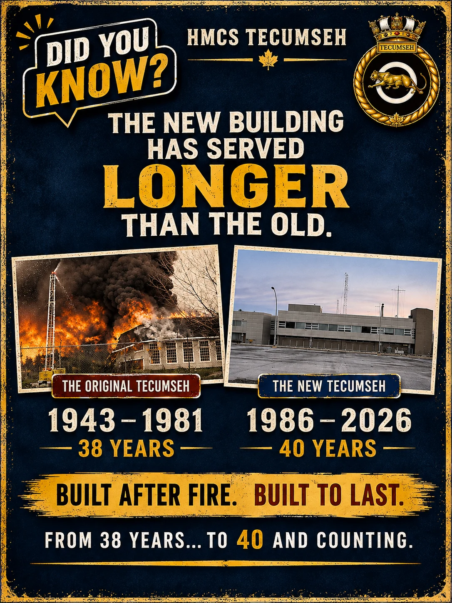

Historical collections · HMCS Tecumseh
HMCS Tecumseh — Did You Know?
Six illustrated stories exploring the people, places and traditions of HMCS Tecumseh. Browse the complete collection using the gallery’s previous/next controls, thumbnails or mobile swipe gestures.

Six illustrated slides
Discover Tecumseh’s stories
From the buildings we have called home to the people whose experiences form our history.
Open the six-slide gallery →Inside the collection
- The original and present Tecumseh buildings
- Best Naval Reserve Division awards
- Former Naval Reserve trades
- Summer training pay in 1957
- Tecumseh, the Shawnee leader
- You Are Part of Tecumseh’s History